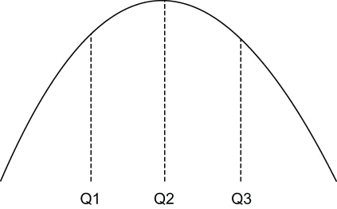

When analyzing streaming data, there are certain types of queries that cannot be computed on the edge because they require huge amounts of both computing resources and time to generate exact results. Examples include count distinct, quantiles, most-frequent items, joins, matrix computations, and graph analysis. Therefore, these types of calculations are typically not performed on these streaming datasets at all. However, if an approximate answer will suffice, there is a specialized category of streaming algorithms for providing approximate values, estimates, and data samples for statistical analysis when the event stream is either too large to store in memory or the data is moving too fast to process.
在分析流式数据时，有某些类型的查询是根本无法在边缘侧计算的，因为它们要产出精确结果，就需要海量的计算资源和时间。这方面的例子包括去重计数、分位数、最频繁项、连接（join）、矩阵运算和图分析。因此，这些类型的计算通常压根就不会在这些流式数据集上执行。然而，如果一个近似答案就够用的话，那么就存在一类专门的流式算法：当事件流要么大到无法存进内存、要么数据移动得太快而来不及处理时，它们可以为统计分析提供近似值、估计值和数据样本。
These streaming algorithms utilize small data structures, known as sketches, which are usually only a few kilobytes in size, to store the information. Sketch-based algorithms perform one-touch processing, meaning they only need to read each element in the stream once. Both these properties make these algorithms ideal candidates for deployment on edge devices. There are four families of sketching algorithms, each focused on solving a different type of problem:
这些流式算法利用被称为 sketch（数据草图）的小型数据结构来存储信息，其大小通常只有几千字节。基于 sketch 的算法执行的是一次触碰处理（one-touch processing），意思是它们只需要把流中的每个元素读取一次。这两个性质一起，使这些算法成为部署在边缘设备上的理想候选。sketch 类算法共有四大家族，每一族都专注于解决一个不同类型的问题：
Cardinality sketches—Provides approximate counts for each distinct value in the stream, such as the number of page views across a number of different web pages in a given timeframe.
基数 sketch（Cardinality sketches）——为流中每个不同的值提供近似计数，例如在给定时间范围内、若干个不同网页各自的页面浏览数。
Frequent item sketches—Provides a list of the most frequently seen values in the stream, such as the top 10 web pages viewed in a given timeframe.
频繁项 sketch（Frequent item sketches）——提供流中最常被看到的那些值的列表，例如在给定时间范围内被浏览最多的前 10 个网页。
Sampling sketches—Uses reservoir sampling to provide a uniform random sample of data from the stream that can be used for analysis.
采样 sketch（Sampling sketches）——使用蓄水池采样，从流中提供一份均匀随机的数据样本，以供分析使用。
Quantile sketches—Provides a frequency histogram that contains information about the distribution of the data stream values that can be used for anomaly detection.
分位数 sketch（Quantile sketches）——提供一张频率直方图，其中包含关于数据流取值分布的信息，可被用于异常检测。
There is an open source library called Apache DataSketches that contains implementations of these algorithms in Java, which makes them easy to use inside a Pulsar function, such as the one shown in listing 12.4, which uses the quantile sketch to detect anomalies in the sensor data.
有一个名为 Apache DataSketches 的开源库，其中包含了这些算法的 Java 实现；这使得它们很容易在一个 Pulsar 函数内部被使用，例如清单 12.4 中所示的那个函数——它使用分位数 sketch 来检测传感器数据中的异常。
Quantiles
分位数（Quantiles）
The word quantile is derived from the word quantity and simply refers to equal-sized groupings of something—typically a probability distribution or a series of observed values. You are already familiar with some of the more common quantiles that are referred to by their more common names, such as halves, thirds, quarters, etc. In statistics and probability, quantiles are more formally defined as cut points that divide a probability distribution into continuous, adjacent intervals with an equal number of elements.
分位数（quantile）这个词源自 quantity（量）一词，简单地指把某样东西分成大小相等的若干组——通常是把一个概率分布或一串观测值分成这样的若干组。你已经熟悉其中一些更常见的分位数，它们有着更通俗的名字，例如二分位、三分位、四分位等等。在统计学和概率论中，分位数被更正式地定义为这样一些切分点：它们把一个概率分布划分成若干个连续的、相邻的区间，而每个区间含有相同数量的元素。
For example, in figure 12.11 there are three values—Q1, Q2, and Q3—which splits the dataset into equally weighted sections. The areas under the graph between each of these points are the quantiles, in this case thirds, which contain an equal number of data points.
举例来说，在图 12.11 中有三个值——Q1、Q2 和 Q3——它们把这份数据集切分成了权重相等的若干段。图中这些点之间的曲线下面积就是各个分位数；在本例中是三分位，每一段都含有相同数量的数据点。

Figure 12.11 A dataset that is divided into three equal-sized sections known as quantiles. Values less than or equal to Q1 are considered part of the first quantile; values between Q1 and Q2 are part of the second quantile; and those greater than or equal to Q3 are part of the third quantile.
图 12.11 一份被划分成三个等大小区段（即分位数）的数据集。小于或等于 Q1 的值被视为属于第一个分位数；介于 Q1 与 Q2 之间的值属于第二个分位数；而大于或等于 Q3 的那些值则属于第三个分位数。
For our use case, we will be processing an endless stream of metric data values and using them to dynamically construct a quantile. This allows us to make our decisions based solely on the actual observed values when determining whether or not a value is anomalous by comparing it to previous values of the same metric. When a new metric reading comes into our Pulsar function, we will first add it to the quantile to update the distribution model, and then we will calculate the rank of the metric reading. The rank is best described as the proportion of values in the distribution that the given value is greater than or equal to. For instance, if a metric reading is higher than 79% of the previously observed values, then its rank would be 79. Ranking a value helps us determine whether a given metric reading is commonplace or not, and we have decided to use a configurable value to define the threshold that we consider anomalous.
就我们的用例而言，我们将处理一条无穷无尽的指标数据值流，并用它们来动态地构造一个分位数。这让我们在判定某个值是否异常时，能够完全依据实际观测到的数值来做决定——办法是把它与同一指标的先前各个值做比较。当一个新的指标读数进入我们的 Pulsar 函数时，我们会先把它加进分位数，以更新这个分布模型，然后我们会计算该指标读数的秩（rank）。对秩最好的描述是：该分布在多大比例的值上，是小于或等于这个给定值的。举例来说，如果某个指标读数高于此前已观测到的 79% 的值，那么它的秩就是 79。为一个值判定秩，有助于我们确定某个给定指标读数是否司空见惯；而我们已决定用一个可配置的值来界定我们所认为的异常阈值。
Listing 12.4 A Pulsar function for anomaly detection
import org.apache.datasketches.quantiles.DoublesSketch;
import org.apache.datasketches.quantiles.UpdateDoublesSketch; ❶
. . .
public class AnomalyDetector implements Function<Double, Void> {
private UpdateDoublesSketch sketch;
private double alertThreshold;
private boolean initalized = false;
@Override
public Void process(Double input, Context ctx) throws Exception {
if (!initalized) {
init(ctx);
}
sketch.update(input); ❷
if (sketch.getRank(input) >= alertThreshold) { ❸
react(); ❹
}
return null;
}
protected void init(Context ctx) {
sketch = DoublesSketch.builder().build();
alertThreshold = (double) ctx.getUserConfigValue ("threshold");
initalized = true;
}
protected void react() {
// Implementation specific ❺
}
}
❶ This function relies on the DataSketches library to perform the statistical calculations.
❶ 这个函数依赖 DataSketches 库来执行那些统计计算。
❷ Add the metric reading to the sketch.
❷ 把这个指标读数加进 sketch。
❸ Get the metric reading’s rank value, and compare that to the alert threshold.
❸ 取得该指标读数的秩，并把它与告警阈值做比较。
❹ If the metric is above the configured threshold, then react.
❹ 如果该指标高于所配置的阈值，就做出反应。
❺ This will vary based on the LwM2M protocol being used by the actuator.
❺ 这将随该执行器所使用的 LwM2M 协议不同而变化。
The logic for the function is fairly straightforward. First, we update the quantile sketch by adding the data element to it. Then, we request the relative rank of the value in the overall distribution. Next, we determine whether the value is an outlier or not by comparing the metric reading’s rank to the preconfigured alert threshold. If an outlier is detected, then we use an LwM2M client to send a message to an actuator in the perception and reaction layer to perform some sort of preventative action, such as turning off a machine or opening a pressure valve. The logic of the react function shown in listing 12.4 will vary based on the LwM2M protocol being used and the command(s) we need to send in response to the event.
这个函数的逻辑相当直截了当。首先，我们通过把该数据元素加进分位数 sketch 来更新它。然后，我们请求这个值在整个分布中的相对秩。接着，我们通过把该指标读数的秩与预先配置好的告警阈值做比较，来判定这个值是否为离群值。如果检测到了离群值，我们就用一个 LwM2M 客户端向感知与反应层中的某个执行器发送一条消息，以执行某种预防性动作，例如关掉一台机器或打开一个压力阀。清单 12.4 中所示那个 react 函数的逻辑，将随所使用的 LwM2M 协议、以及我们为响应该事件而需要发送的命令不同而变化。